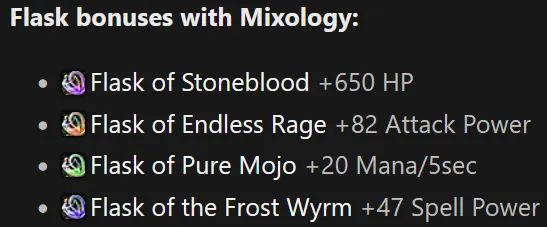

WotLK Warmane Icecrown - Alchemy 1 to 450 (x3), Specializations and Gold Making
Mixology bonus, full leveling route, which specialization to pick and how to make gold.
Alchemy Bonus
At level 400 Alchemy, you unlock the passive bonus Mixology.
Mixology gives increased effect and duration when you drink any elixir or flask.
Here’s the bonuses for each flask:

Leveling Alchemy from 1 to 450
Required Materials
SOME CRAFTS ARE YELLOW OR GREEN.
YOU MIGHT NEED MORE MATERIALS THAN LISTED HERE.
GET MORE MATERIALS.
(usually add 3 or 5 for each material)
| Recipe | Vendor | Others | Herbs | Potions (For Alchemy Specialization) |
|
|---|---|---|---|---|---|
| Recipe: Super Mana Potion [Location or Buy in AH] | 31 Empty Vial | 3 Dark Jade | 20 Peacebloom | 28 Blindweed | 4 Super Mana Potion |
| 29 Leaded Vial | 3 Huge Citrine | 20 Silverleaf | 15 Golden Sansam | 2 Super Healing Potion | |
| 32 Crystal Vial | 3 Eternal Fire | 25 Briarthorn | 2 Mountain Silversage | 5 Major Dreamless Sleep Potion | |
| 47 Imbued Vial | 15 Pygmy Suckerfish | 11 Mageroyal | 17 Felweed | Flying in Outland | |
| 5 Enchanted Vial | 8 Bruiseweed | 8 Terocone | 150 Gold if you want to switch Specialization | ||
| 19 Stranglekelp | 5 Dreaming Glory | ||||
| 11 Liferoot | 17 Goldclover | ||||
| 11 Kingsblood | 6 Deadnettle | ||||
| 10 Goldthorn | 15 Talandra's Rose | ||||
| 32 Sungrass | 59 Icethorn | ||||
| 20 Khadgar's Whisker | 5 Frost Lotus | ||||
Now choose which trinket to craft depending on what you need
-
Tank: 20 Deadnettle, 12 Pygmy Oil, 1 Frost Lotus
-
Caster: 20 Goldclover, 2 Eternal Life, 1 Frost Lotus
-
Melee: 15 Adder's Tongue, 15 Tiger's Lily, 1 Frost Lotus
For example if you main spec Tank add 20 Deadnettle, 12 Pygmy Oil, 1 Frost Lotus in your shopping list.
Leveling 1-450
| Level | Craft | Quantity | Total Material |
|---|---|---|---|
| Learn Apprentice Alchemy at 1 | |||
| 1-61 | Minor Healing Potion (Keep 15 of therm) | 20 | 20 Peacebloom, 20 Silverleaf, 20 Empty Vial |
| Learn Journeyman Alchemy at 50 | |||
| 61-106 | Lesser Healing Potion | 15 | 15 Minor Healing Potion, 15 Briarthorn |
| 106-112 | Elixir of Wisdom | 2 | 2 Mageroyal, 2 Briarthorn, 2 Empty Vial |
| 112-136 | Healing Potion | 8 | 8 Bruiseweed, 8 Briarthorn, 8 Leaded Vial |
| Learn Expert Alchemy at 125 | |||
| 136-163 | Lesser Mana Potion | 9 | 9 Mageroyal, 9 Stranglekelp, 9 Empty Vial |
| 163-196 | Greater Healing Potion | 11 | 11 Liferoot, 11 Kingsblood, 11 Leaded Vial |
| 196-220 | Elixir of Agility | 10 | 10 Stranglekelp, 10 Goldthorn, 10 Leaded Vial |
| Learn Artisan Alchemy at 200 | |||
| 220-250 | Superior Healing Potion | 12 | 12 Sungrass, 12 Khadgar’s Whisker, 12 Crystal Vial |
| 250-271 | Elixir of Greater Intellect | 8 | 8 Blindweed, 8 Khadgar’s Whisker, 8 Crystal Vial |
| 271-295 | Superior Mana Potion | 10 | 20 Sungrass, 20 Blindweed, 10 Crystal Vial |
| Learn Master Alchemy at 275 In Outland | |||
| 295-301 | Major Healing Potion | 2 | 4 Golden Sansam, 2 Mountain Silversage, 2 Crystal Vial |
| 301-322 | Volatile Healing Potion | 8 | 8 Golden Sansam, 8 Felweed, 8 Imbued Vial |
| 322-343 | Elixir of Draenic Wisdom | 8 | 8 Felweed, 8 Terocone, 8 Imbued Vial |
| 343-349 | Super Healing Potion (Keep it for Alchemy Specialization) |
3 | 3 Golden Sansam, 3 Dreaming Glory, 3 Imbued Vial |
| 349-352 | Super Mana Potion (Keep it for Alchemy Specialization) |
1 | 2 Dreaming Glory, 1 Felweed, 1 Imbued Vial |
| Learn Grand Alchemy at 350 In Northrend | |||
| 352-370 | Resurgent Healing Potion | 7 | 14 Goldclover, 7 Imbued Vial |
| 370-376 | Wrath Elixir | 3 | 3 Goldclover, 6 Deadnettle, 3 Imbued Vial |
| 376-385 | Pygmy Oil | 15 | 15 Pygmy Suckerfish |
| 385-397 | Elixir of Spirit | 5 | 15 Talandra’s Rose, 5 Imbued Vial |
| 397-424 | Indestructible Potion | 12 | 24 Icethorn, 12 Imbued Vial |
| 424-427 | Make your Alchemist Stone: Caster: Mercurial Alchemist Stone Melee: Mighty Alchemist Stone Tank: Indestructible Alchemist Stone |
1 | X |
| 427-436 | Alchemy: Transmute: Earthsiege Diamond | 3 | 3 Dark Jade, 3 Huge Citrine, 3 Eternal Fire |
| 436-450 | Flask of Pure Mojo (Cheapest) |
5 | 35 Icethorn, 15 Pygmy Oil, 5 Frost Lotus, 5 Enchanted Vial |
| 436-450 | Flask of Frost Wyrm | 5 | 25 Icethorn, 25 Lichbloom, 5 Frost Lotus, 5 Enchanted Vial |
| 436-450 | Flask of Endless Rage | 5 | 35 Lichbloom, 15 Goldclover, 5 Frost Lotus, 5 Enchanted Vial |
| 436-450 | Flask of Stoneblood | 5 | 35 Lichbloom, 15 Crystallized Life, 5 Frost Lotus, 5 Enchanted Vial |
Alchemy Specializations
What’s Alchemy Specializations
Once you reach Alchemy skill 325 and level 68, you may begin a quest to learn one of three specializations: Potion, Elixir, or Transmutation.
Being specialized gives you a chance to create an extra 1 to 4 (for a total of 5) items while crafting Potions, Elixirs, or Transmutations.
Keep in mind, you can switch Alchemy specializations for only 150g, and you don't have to do the quest for the specialization you are switching to! It's usually better to do the cheapest/easiest quest and then switch to the specialization you want.
Which one to pick?
Cheapest/easiest option: You can pick up the Master of Potions quest from Lauranna Thar'well at Cenarion Refuge in Zangarmarsh. To complete the quest, you will need:
-
5 Super Healing Potion
-
5 Super Mana Potion
-
5 Major Dreamless Sleep Potion
You will also need the Botanist's Field Guide from the second boss in Botanica.
Dungeon Entrance at Outlands, Netherstorm REQUIRES FLYING!!!
More information in this guide : Guide to Alchemy Specializations in TBC Classic
Make Gold
- - Make gold
Now for the most important part, gold making
The first thing to do once you level up alchemy is to decide which
specialization to choose
Potions
If you choose potion specialization, you’ll have to learn potion of speed and potion of wild magic from the Northrend Alchemy Research
You can learn Northrend Alchemy Research at level 400 at your alchemy trainer, it’s a craft that has a 68 hour cooldown, once completed, it will teach you a new potion recipe.
There is 13 discoverable potion, so keep doing the research until you discover potion of speed and potion of wild magic
Elixirs
If you choose elixir specialization, you’ll craft flasks of endless rage, pure mojo, stoneblood and frost wyrm
Keep in mind that Elixir specialization also includes elixirs and flasks
Transmutation
And if you choose transmutation specialization, you can do these following transmutation
Keep in mind that every transmutation craft have a 20 hour cooldown
Wotlk
Transmute:
-
Titanium
-
Skyflare Diamond
-
Earthsiege Diamond
-
Gems, ranked by their value in the market (might vary in the future):
| Rank | Gem |
|---|---|
| 1 | Cardinal Ruby (red) (learnt with a quest) |
| 2 | King’s Amber (yellow) |
| 3 | Ametrine (orange) |
| 4 | Dreadstone (purple) |
| 5 | Majestic Zircon (blue) |
| 6 | Eye of Zul (green) |
-
Eternals, ranked by their value in the market (might vary in the future):
| Rank | Eternal |
|---|---|
| 1 | Shadow |
| 2 | Fire |
| 3 | Life |
| 4 | Air |
| 5 | Earth |
| 6 | Water |
TBC
Transmute:
-
Primal Might
-
Primals, ranked by their value in the market (might vary in the future):
| Rank | Primal |
|---|---|
| 1 | Water |
| 2 | Air |
| 3 | Mana |
| 4 | Life |
| 5 | Shadow |
| 6 | Fire |
| 7 | Earth |
Classic
Transmute:
-
Iron Bar to Gold Bar
-
Arcanite Transmutation
-
Essences, ranked by their value in the market (might vary in the future):
| Rank | Essence |
|---|---|
| 1 | Air |
| 2 | Water |
| 3 | Living Essence |
| 4 | Fire |
| 5 | Undeath |
| 6 | Earth |
Ranking Specializations
-
Potion Specialization: requires recipe discovery but offers the most profit
-
Elixir Specialization: no recipe required, decent profit
-
Transmutation Specialization: Some recipe required, constant logging, decent profit
Conclusion
I recommend Potion or Elixir specialization for their accessibility and profit